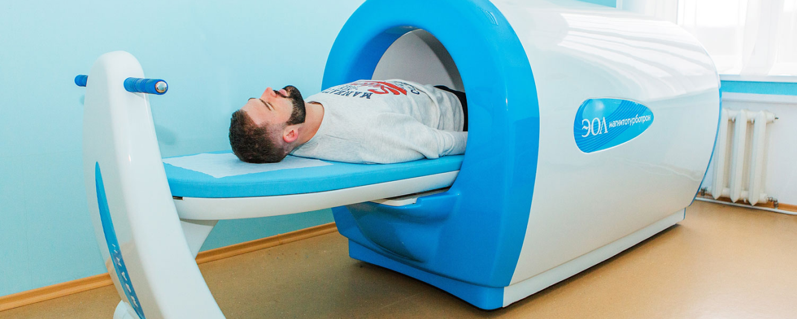

Общая магнитотерапия

Описание
Общая магнитотерапия на аппарате ”Магнитотурботрон ЭОЛ”. Магнитотерапевтическая установка, создающая
вращающееся
магнитное
поле вокруг всего тела пациента одновременно за счёт его размещения
целиком внутри индуктора большого диаметра, позволяет одновременно
влиять на все системы организма.
Общие показания для лечения на аппарате:
- Неопухолевые заболевания: нарушения функций опорно-двигательного аппарата (остеохондроз позвоночника,ревматоидный артрит, деформирующий остеоартроз, артриты, ушибы, переломы костей, эпикондилез);
- психосоматические расстройства (вегетативно-сосудистая дистония, синдром хронической усталости, депрессивные и астенические состояния, неврозы);
- заболевания нервнойсистемы (последствия травм и нарушений кровообращения головного и спинного мозга, начальные проявления недостаточности кровоснабжения мозга, дисциркуляторная энцефалопатия, невропатии черепных и периферических нервов, последствия нейроинфекций);
- артериальная гипертония, местные нарушения системы кровообращения застойного и отечного характера, сопровождающиеся изменениями гемодинамики магистральных сосудов и микроциркуляции (облитерирующий эндартериит и атеросклероз сосудов конечностей, хроническая венозная недостаточность, в том числе с трофическими нарушениями, васкулиты с наличием трофических язв, посттромботическая болезнь вен, мигрирующий тромбофлебит,геморрой, первичный и приобретенный лимфостаз);
- заболевания органов пищеварения (неосложненные формы язвенной болезни желудка и двенадцатиперстной кишки, гастриты, холециститы, панкреатиты, энтероколиты, состояния через 3-4 недели после операций на желудке и кишечнике);
- заболевания органов дыхания (пневмонии, бронхиальная астма, туберкулез легких, острые и хронические бронхиты, синуситы, фарингиты и тонзиллиты, ОРВИ);
- заболевания желез внутренней секреции (сахарный диабет и его осложнения, увеличения щитовидной железы);
- заболевания мочеполовой системы (мочекаменная болезнь, пиелонефрит, простатит, аденома предстательной железы, острые и хронические воспаления внутренних половых органов, эндометриоз, климактерический синдром, миома матки);
- системные_заболевания_соединительной_ткани; кожные заболевания (экзема, нейродермит, псориаз, в т.ч. псориатический артрит);
- наркомания (наркотический абстинентный синдром), алкоголизм;
- иммунодефицитные состояния
Онкологические заболевания следующих форм и стадий (при комплексном или комбинированном лечении):
- инкурабельные формы злокачественных новообразований для снятия болевого синдрома и коррекции иммунного статуса;
- неоперабельные послеоперационные рецидивы и метастазы злокачественных новообразований;
- местнораспространенный рак молочной железы в фазе предоперационного лечения;
- злокачественные опухоли молочной железы и других органов в послеоперационном периоде;
- лимфоррея после обширных операций на молочной железе;
- для предотвращения или снижения побочных эффектов (эритем, отеков, эпителиитов) при лучевой терапии и химиотерапии;
- лимфома, лимфогранулематоз;
- мастопатия при отсутствии показаний к хирургическому лечению.
Противопоказания
- беременность;
- острый период инфаркта миокарда и инсульта;
- выраженная недостаточность кровообращения;
- лейкозы;
- геморрагические васкулиты;
- наличие у больного искусственного водителя ритма;
- эпилепсия и другие психические заболевания.
Контакты
ХХХ